IV. Trennial of Portrait
The IV. Triennial of Portrait is the flagship event of the Liptov Gallery of Peter Michal Bohúň, held every
three years. The fourth edition centred on an open-call show of works by contemporary Slovak artists,
accompanied by three additional exhibitions.
My role was to develop a visual identity that would serve as an umbrella for both the Triennial itself and
its accompanying exhibitions. The central motif became the silhouette of P. M. Bohúň, paired with
typographic treatment of the event name — arranged to evoke the hand-framing gesture painters use to find
the right composition for a portrait.
The posters and exhibition catalogue cover were then printed on mirror paper — causing the viewer's own
reflection to become part of the composition, making them a participant in the portrait rather than merely
an observer.
Logo Design,
Visual Identity,
Packaging Design,
Generative Tool
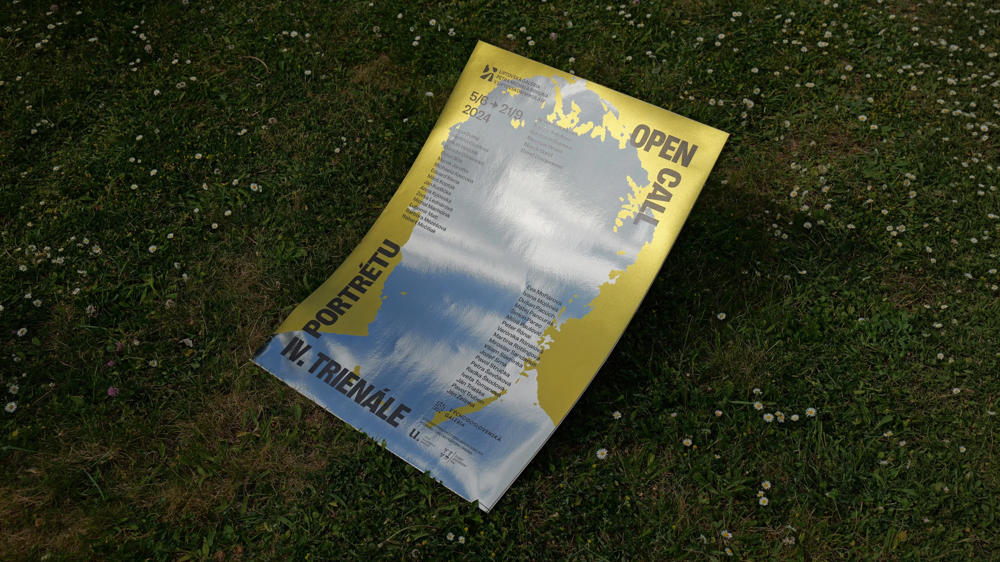
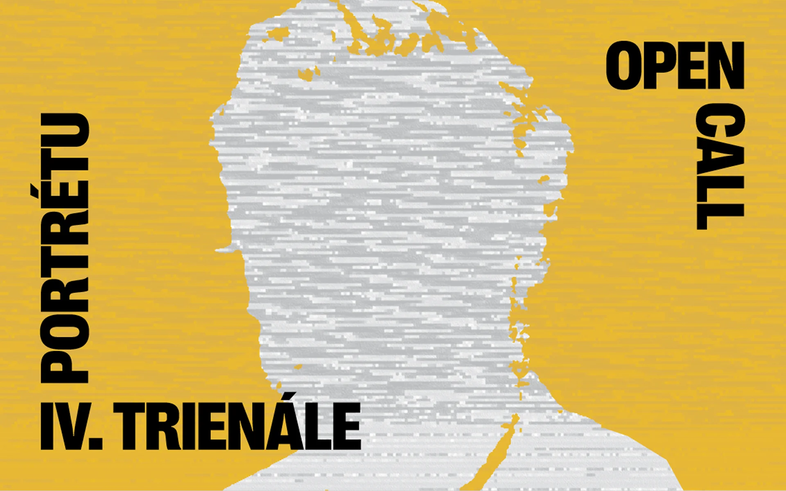
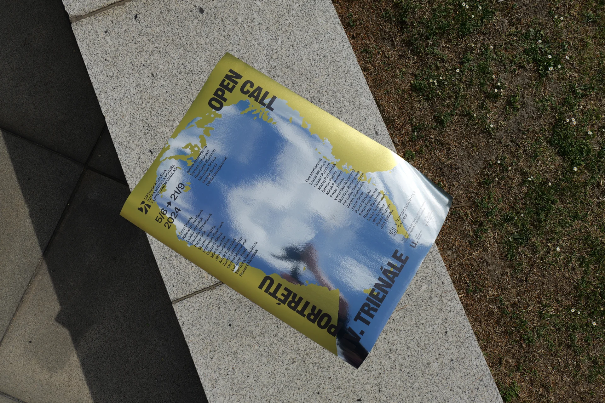
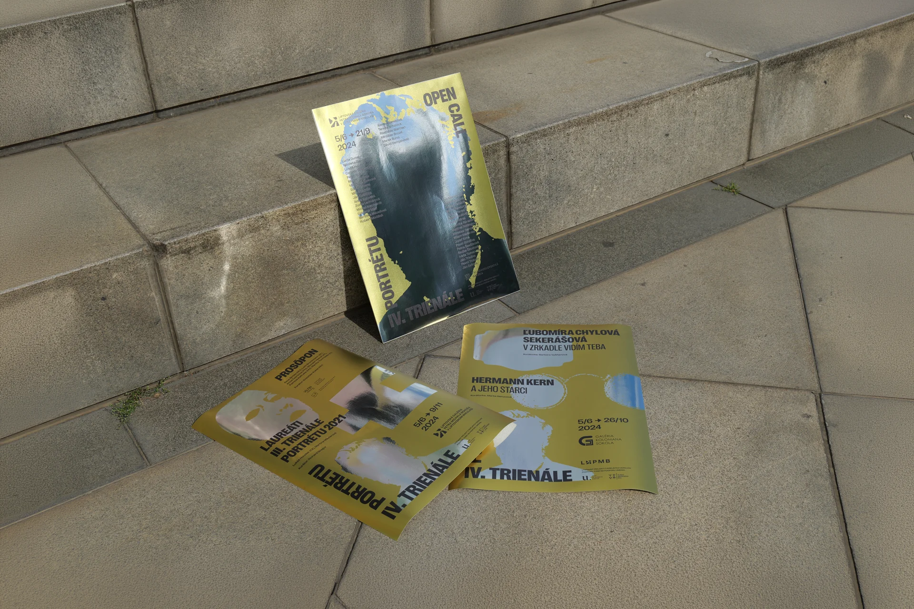
Since the identity had to communicate multiple exhibitions rather than a single event, I needed to design a simple graphic system capable of representing each show within a consistent visual language. The solution was to extend the Bohúň silhouette with a distinct symbol for each of the exhibitions.
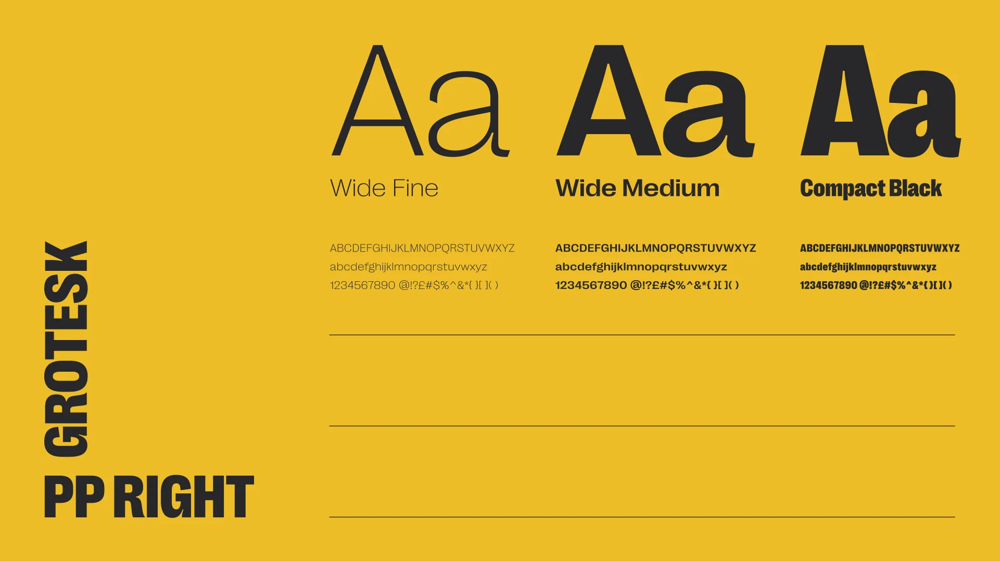
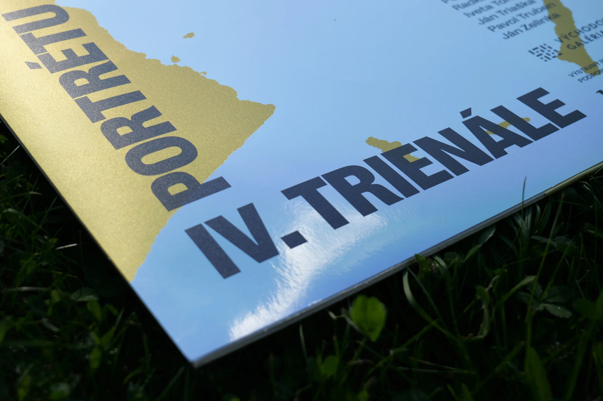
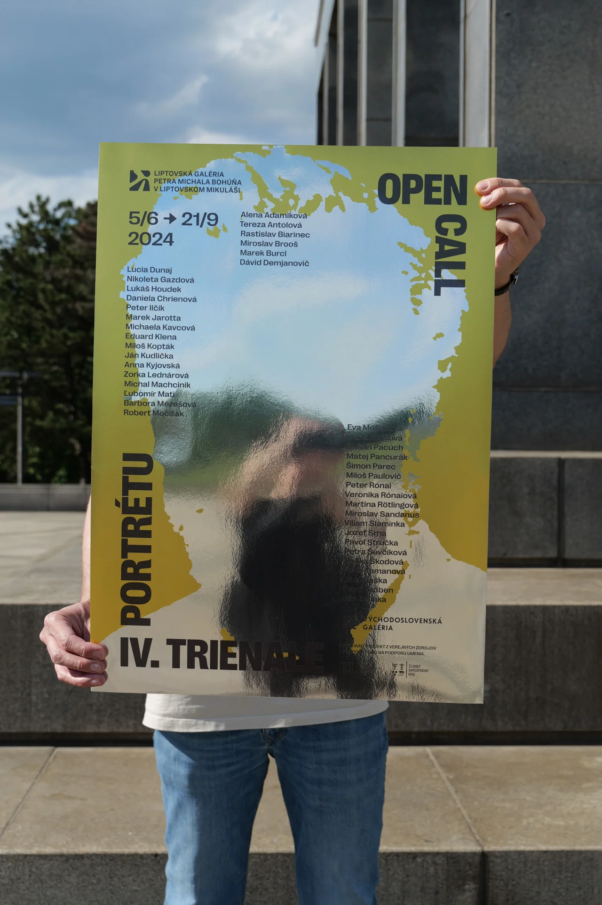
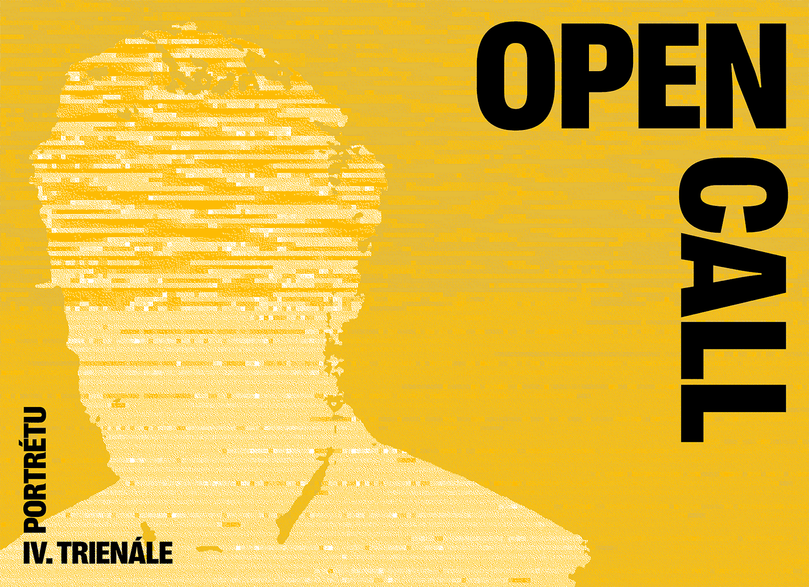
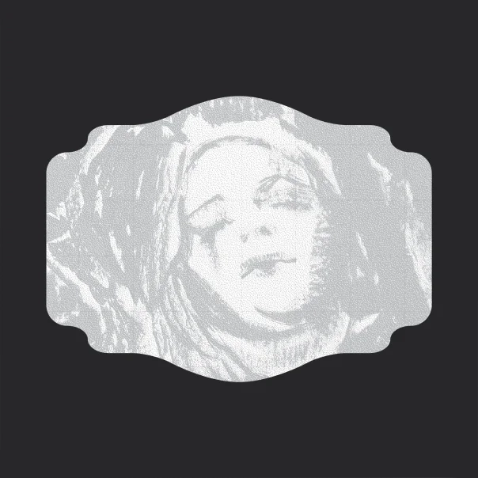
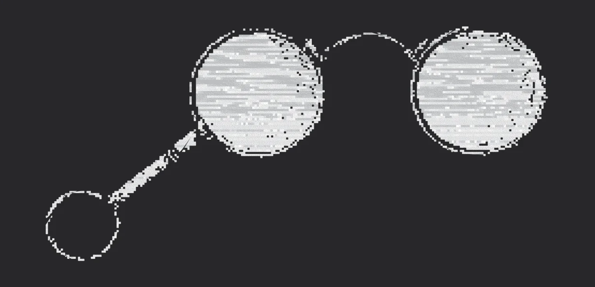
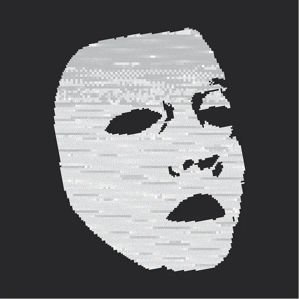
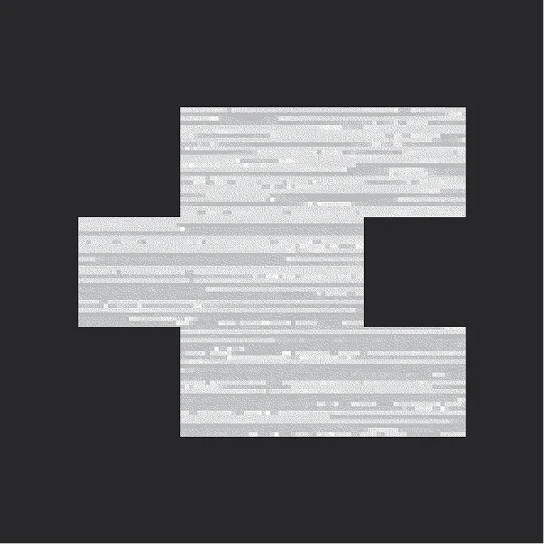
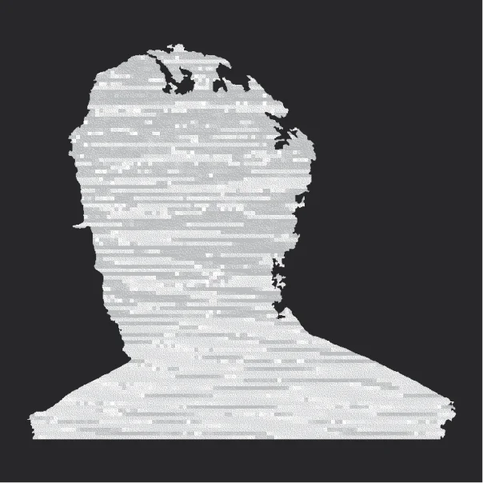
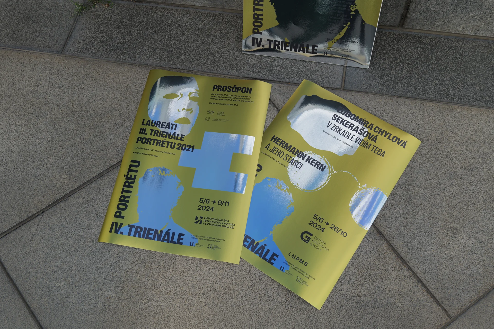
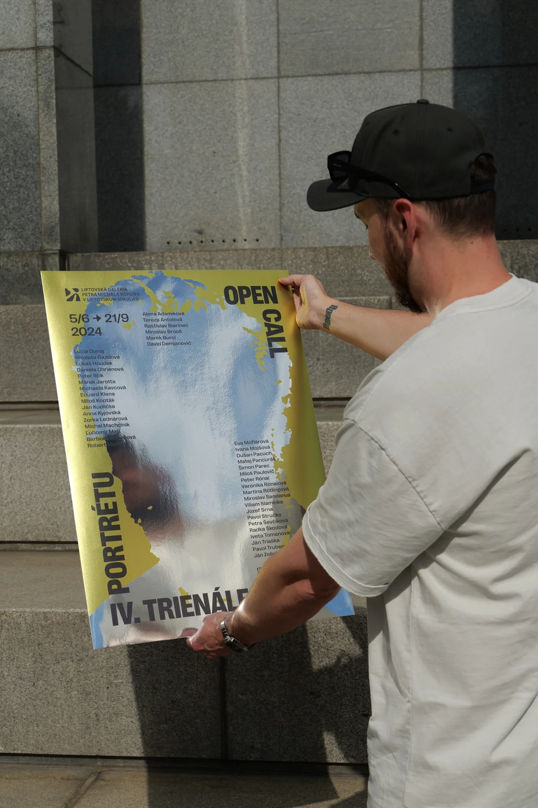
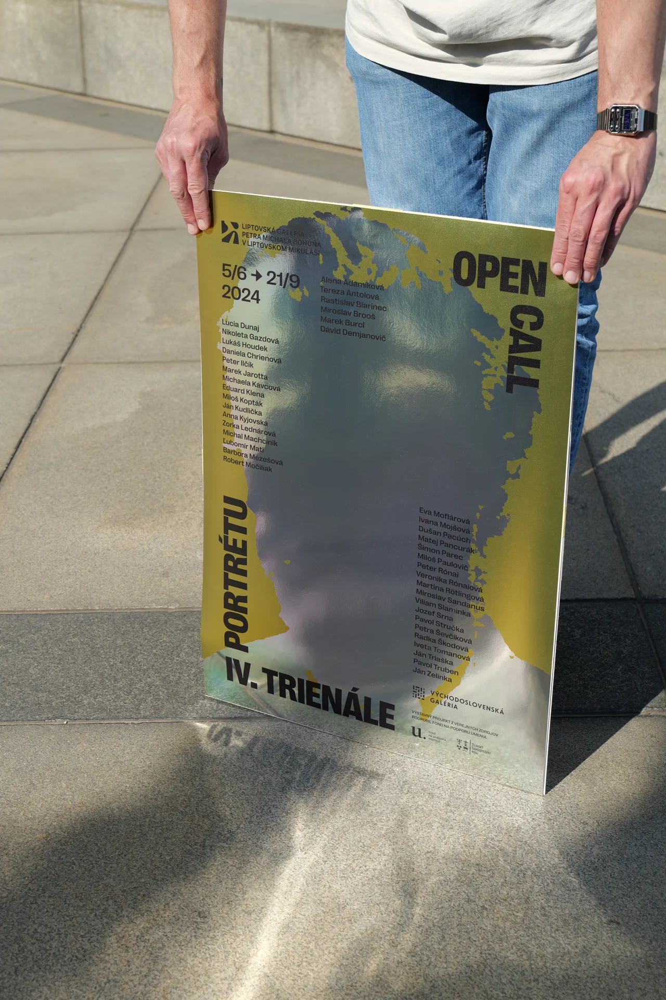
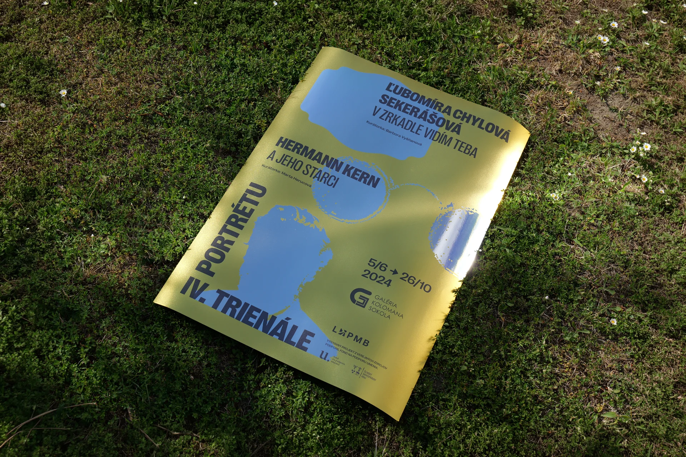